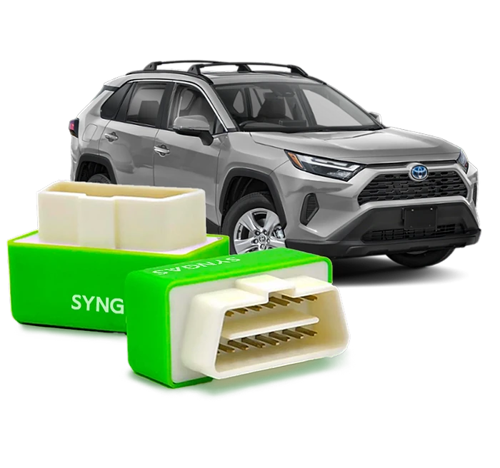
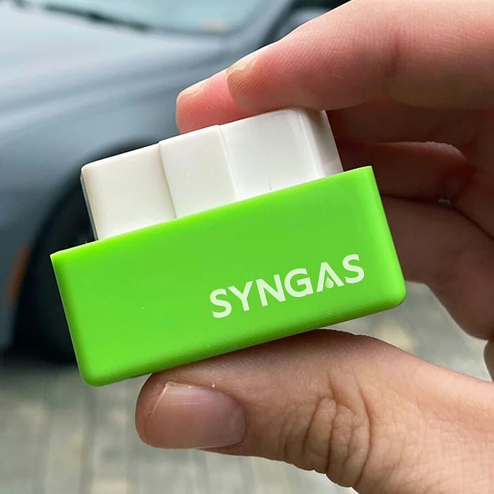

Was ist SynGas und wie funktioniert es?
SynGas ist ein kleiner Stecker in Grün und Weiß, der in die OBD2-Buchse eines Autos gesteckt wird. Diese Diagnoseschnittstelle haben die meisten Fahrzeuge ab Baujahr 1996; sie sitzt meist im Fußraum unter dem Lenkrad. Laut der offiziellen Website soll das Gerät den Kraftstoffverbrauch senken, die Leistung steigern und den CO2-Ausstoß verringern.
Das Prinzip beschreibt der Hersteller so: SynGas soll das Steuergerät (ECU) „optimieren“ und sich nach etwa 240 Kilometern an den Fahrstil anpassen. Danach soll das Auto weniger verbrauchen. Auf der Startseite ist von einer Ersparnis von „bis zu 55%“ die Rede, ein Werbebild zeigt „7 km/l“ ohne und „10 km/l“ mit dem Stecker.
Gleichzeitig heißt es in den häufig gestellten Fragen, SynGas nehme keine dauerhaften Änderungen am Steuergerät vor und man könne jederzeit zu den Originaleinstellungen zurückkehren, indem man den Stecker abzieht. Wie ein Gerät die Motorsteuerung optimieren soll, ohne sie zu verändern, erklärt die Seite nicht.
Hier ist deutliche Skepsis angebracht. Die OBD2-Buchse ist in erster Linie zum Auslesen von Daten gedacht. Der Verbrauch hängt von Motor, Gewicht, Luftwiderstand, Reifen und Fahrweise ab; eine Einsparung in der Größenordnung von 55 % durch einen Stecker ist technisch nicht plausibel, und die Website legt dafür keinen unabhängigen Test vor.
Spritspar-Stecker dieser Bauart werden seit Jahren unter wechselnden Namen verkauft. Verbraucherportale warnen regelmäßig davor, und im Netz veröffentlichte Zerlegungen ähnlicher Geräte zeigten oft nur eine einfache Platine mit Leuchtdioden.
Dass Fahrer nach dem Einstecken einen geringeren Verbrauch bemerken, kann andere Gründe haben: Wer auf den Verbrauch achtet, fährt meist bewusster und vorausschauender.
Einordnung: Wer SynGas bestellt, sollte es als unbewiesenes Zubehör betrachten und den Verbrauch vorher und nachher selbst genau messen, am besten über mehrere Tankfüllungen.
SynGas Funktionen
Laut der offiziellen Website bietet SynGas:
OBD2-Stecker: für Fahrzeuge mit OBD2-Anschluss ab Baujahr 1996.
Anpassung an den Fahrstil: nach etwa 240 km Fahrt.
Weniger Verbrauch: laut Startseite „bis zu 55%“.
Mehr Leistung: ein „Kraft- und Leistungsschub“.
Weniger CO2: durch geringeren Verbrauch.
Wartungsfrei und kompakt: einstecken und vergessen.
Auf den Produktbildern sind der grüne Stecker in der Hand vor einem Armaturenbrett, Autos auf einem Parkplatz, eine Platine mit einem Chip („Kleiner Chip, große Wirkung“) und ein Pick-up mit der Angabe „7 km/l“ zu „10 km/l“ zu sehen. Eine Vergleichstabelle stellt SynGas „Kraftstoff-Ionisatoren“ und „Kraftstoff-Additiven“ gegenüber.
Was fehlt: technische Daten, eine Beschreibung, was der Chip konkret ausliest oder verändert, eine Liste geprüfter Fahrzeugmodelle, Angaben zu Diesel, Hybrid oder Elektroauto, ein Prüfzeichen und vor allem ein unabhängiger Verbrauchstest. Die deutsche Seite enthält außerdem Übersetzungsreste wie „mehr Kilometer pro Gallone“. Der zitierte „Maschinenbauingenieur Andrew Stevens“ wird ohne Arbeitgeber oder Nachweis genannt. Unklar bleibt auch, ob das Gerät eine CE-Kennzeichnung trägt und wer es herstellt; die Website nennt nur den Verkäufer.
SynGas Anwendung
Die Website beschreibt drei Schritte. Stecken Sie SynGas in die OBD2-Buchse Ihres Autos, schalten Sie die Zündung für 30 Sekunden ein und starten Sie dann den Motor. Fahren Sie wie gewohnt; nach etwa 240 Kilometern bzw. rund einer Woche soll sich das Gerät an Ihre Fahrweise angepasst haben.
Laut den häufig gestellten Fragen genügt ein Gerät pro Fahrzeug, technisches Wissen sei nicht nötig, und zum Zurücksetzen ziehe man den Stecker einfach ab.
Allgemeine Hinweise: Die OBD2-Buchse ist mit der Fahrzeugelektronik verbunden. Fremde Stecker können im Einzelfall Fehlermeldungen auslösen oder die Batterie belasten, wenn sie dauerhaft Strom ziehen. Prüfen Sie in der Bedienungsanleitung Ihres Fahrzeugs, ob Zubehör an der Diagnosebuchse zulässig ist, und fragen Sie im Zweifel Ihre Werkstatt, gerade bei Fahrzeugen mit laufender Herstellergarantie oder Leasingvertrag.
Wenn Sie die Wirkung prüfen möchten: Notieren Sie über zwei oder drei Tankfüllungen ohne Stecker die gefahrenen Kilometer und die getankte Menge, dann dasselbe mit Stecker, bei möglichst ähnlichen Strecken und ähnlichem Wetter. Der Bordcomputer allein ist für so einen Vergleich zu ungenau. Bleibt der Unterschied im Rahmen normaler Schwankungen, sollten Sie die Rückgabefrist rechtzeitig und schriftlich nutzen.
SynGas – Rückerstattung
Laut der offiziellen Website gilt eine 30-Tage-Geld-zurück-Garantie. Nach der Rückgaberichtlinie können Produkte innerhalb von 30 Tagen nach Erhalt der Bestellung gegen Rückerstattung oder Umtausch zurückgesendet werden, wenn sie beschädigt oder defekt sind, wenn Sie einen falschen Artikel erhalten haben oder wenn Sie es sich anders überlegt haben.
Wichtig ist der Unterschied zur Werbung auf der Startseite, die „ohne Fragen zu stellen“ verspricht. In der Richtlinie steht, dass Ware bei einer Rückgabe wegen Meinungsänderung unbenutzt, unbeschädigt und in der Originalverpackung sein muss. Ein Stecker, den Sie über Wochen getestet haben, könnte demnach abgelehnt werden. Klären Sie das am besten vor der Bestellung schriftlich mit dem Kundendienst.
Der Ablauf: Kundendienst mit Name, E-Mail, Bestellnummer und Grund kontaktieren; die Prüfung dauert meist bis zu drei Werktage. Bei Genehmigung erhalten Sie ein RMA-Formular und die Rücksendeadresse. Pakete ohne Genehmigung oder an die Firmenadresse werden laut Richtlinie nicht bearbeitet, und die Sendungsnummer soll per E-Mail mitgeteilt werden.
Die Kosten der Rücksendung trägt laut Richtlinie der Kunde, die ursprünglichen Versandkosten werden nicht erstattet. Für Verbraucher in der EU gilt zusätzlich das gesetzliche Widerrufsrecht von 14 Tagen. Bewahren Sie Bestellbestätigung, Formular und Sendungsnummer der Rücksendung auf, bis die Erstattung eingegangen ist. Planen Sie den Verbrauchstest so, dass die 30 Tage für Messung und Rücksendung reichen.
SynGas Kundenbewertungen
-
Anna S., DeutschlandVerifizierter Kauf
„Als jemand, der täglich lange Strecken zurücklegt, ist die Kraftstoffeffizienz für mich von entscheidender Bedeutung. SynGas hat die Kilometerleistung und die Gesamtleistung meines Autos deutlich verbessert.“
-
Leon B., DeutschlandVerifizierter Kauf
„Als Autoliebhaber bin ich immer auf der Suche nach Produkten, die die Leistung verbessern. […] Die einfache Installation und die spürbaren Ergebnisse machen es zu einer Top-Empfehlung für andere Autoliebhaber.“
-
Felix S., DeutschlandVerifizierter Kauf
„SynGas ist ein Retter für meine täglichen Fahrten in der Stadt gewesen. […] Dieses Gerät ist die perfekte und praktische Wahl für Stadtfahrer wie mich.“
SynGas – Wo kaufen?
SynGas wird über die offizielle Bestellseite get-syngas.com verkauft, die eine eigene deutsche Version hat. Dort finden Sie Funktionen, Anleitung, Kundenstimmen, häufig gestellte Fragen und Kontakt, und Sie wählen direkt die gewünschte Anzahl an Geräten.
Fast baugleiche OBD2-Spritspar-Stecker gibt es unter vielen anderen Namen, auch auf großen Marktplätzen. Bei Angeboten unter dem Namen SynGas auf anderen Plattformen ist nicht sicher, ob es sich um dasselbe Produkt handelt, und die 30-Tage-Garantie des Verkäufers gilt dort in der Regel nicht. Vergleichen Sie im Zweifel Aussehen, Verpackung und Verkäuferangaben.
Die Bestellseite arbeitet mit einem Countdown, dem Hinweis „Restpostenangebot“ und Rechenbeispielen zu jährlichen Tankkosten. Lassen Sie sich davon nicht drängen. Prüfen Sie vor dem Abschluss die Bestellübersicht, die Anzahl, das Lieferland und die Rückgabebedingungen, und achten Sie darauf, dass Sie sich wirklich auf get-syngas.com befinden. Wenn Sie mehrere Fahrzeuge haben, testen Sie zunächst nur ein Gerät in einem Auto. Verkäufer ist laut Impressum die Movira LLC mit Sitz in Delaware (USA).
Um sicherzugehen, dass Sie das Originalprodukt erhalten, besuchen die meisten Nutzer die offizielle Website.
Ist SynGas Betrug?
Ob der Shop zuverlässig liefert, lässt sich von außen nicht beurteilen; es gibt eine Bestellseite mit deutscher Version, Anleitung, Kundenstimmen, häufig gestellten Fragen, Rückgaberichtlinie und Impressum, und der Verkäufer ist mit Adresse angegeben.
Positiv sind die 30-Tage-Geld-zurück-Garantie, die einfache Handhabung und der Hinweis, dass das Gerät keine dauerhaften Änderungen am Fahrzeug vornehmen soll.
Das Kernversprechen ist jedoch nicht belegt. „Bis zu 55%“ weniger Verbrauch durch einen OBD2-Stecker ist technisch nicht nachvollziehbar, die Website zeigt keinen unabhängigen Test, und die Aussagen widersprechen sich: Das Gerät soll das Steuergerät optimieren, aber nichts daran verändern. Die 8.258 Bewertungen mit 4,7 Sternen lassen sich nicht überprüfen, die Kundenstimmen erscheinen auf der Seite doppelt, und der zitierte Ingenieur ist nicht nachweisbar. Ähnliche Stecker werden seit Jahren unter wechselnden Namen verkauft und von Verbraucherportalen kritisch gesehen.
Der Verkäufer sitzt in den USA, Rücksendungen brauchen eine vorherige Genehmigung, und ein ausgiebig getestetes Gerät könnte von der Rückgabe wegen Meinungsänderung ausgeschlossen sein.
Wer es trotzdem ausprobieren möchte, sollte keine Ersparnis fest einplanen, den Verbrauch selbst sauber messen und die Rückgabefrist im Kalender notieren. Wer Sprit sparen will, erreicht mit vorausschauendem Fahren, richtigem Reifendruck und weniger Ballast im Kofferraum oft mehr als mit Zubehör für die Diagnosebuchse.
Wer Produktdetails überprüfen oder die aktuelle Verfügbarkeit prüfen möchte, ist auf der offiziellen SynGas-Website am sichersten aufgehoben.
